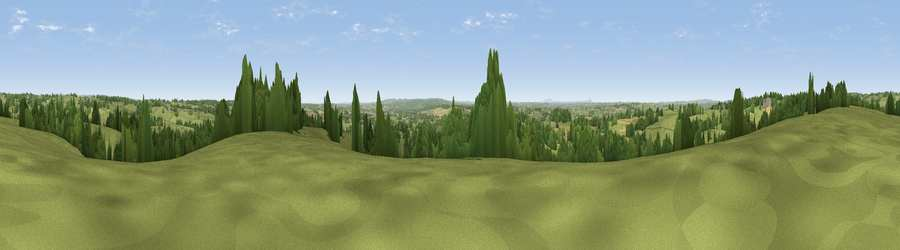

Viewpoint near Milwich
#32748 in England · top 54% of its area beats it · near MilwichThe view, rendered

A 360° render of this exact spot computed from the terrain model, tree cover and land cover — summer colours, afternoon light, calibrated against photographs of famous viewpoints. Real trees, hedges and buildings will differ in detail.
The panorama
Grey silhouette: terrain skyline in each direction (720 bearings, Earth curvature and refraction included). Dashed green: skyline with trees (+15 m) and buildings (+8 m) as obstacles. Blue strip: how far the ground is visible on each bearing.
Where the view opens
Wedge length = distance to the farthest visible ground on that bearing (vegetation-aware). Rings at 10, 25 and 50 km.
What fills the view
73% grassland · 16% woodland · 10% cropland · 1% built-up
Angular shares of the visible panorama (visual magnitude), not map area. Landscape diversity 0.35 (0–1 Shannon).
Key numbers
More beautiful places nearby
The staircase of upgrades: each row has a higher view potential than everything closer. Driving times are estimates from straight-line distance, calibrated against real road routing — check an actual route before setting out.
| Place | Direction | Drive | Score |
|---|---|---|---|
| Viewpoint near Milwich | NNW · 1 km | ~2 min | 43.6 |
| Upper Park | SSW · 2 km | ~4 min | 45.4 |
| Viewpoint near Aston-by-Stone | WNW · 4 km | ~9 min | 45.6 |
| Viewpoint near Aston-by-Stone | WNW · 5 km | ~10 min | 50.7 |
| Viewpoint near Oulton | NW · 5 km | ~12 min | 51.2 |
| Viewpoint near Moddershall | NW · 6 km | ~12 min | 52.3 |
| Peasley Bank | W · 7 km | ~14 min | 57.2 |
| Stafford Castle | SW · 11 km | ~21 min | 60.6 |
52.87713, -2.05085 · source: screening · position refined by local search. Computed location — check access rights before visiting.